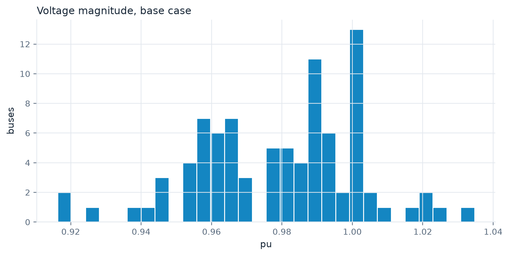
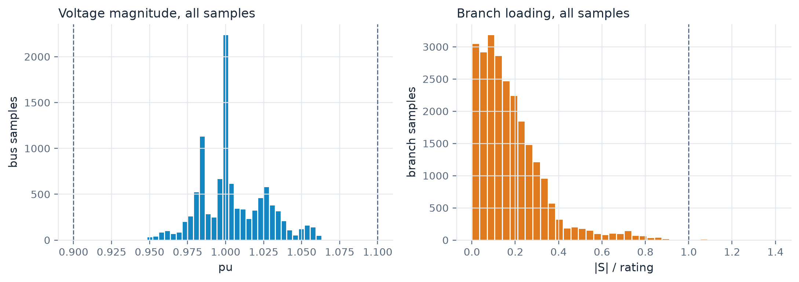

import shutil
from pathlib import Path
import matplotlib.pyplot as plt
import numpy as np
import pandas as pd
import pypowsybl as pp
import yaml
work = Path("outputs/part2")
shutil.rmtree(work, ignore_errors=True)
work.mkdir(parents=True)20 min Part 2 of 4 pypowsybl · OpenLoadFlow · gridfm-datakit
In this part
- Read a transmission grid with PowSyBl and hand it to GridFM-Datakit as XIIDM.
- Configure GridFM-Datakit to perturb load and topology and solve every sample with OpenLoadFlow.
- Explore the dataset and see why it contains operating points outside the limits.
A PEGASE grid
The PEGASE project mapped the European high-voltage grid for state estimation and security studies. Its 89-bus case is a slice of that grid, published with MATPOWER and the PGLib benchmark library. GridFM-Datakit downloads PGLib cases on demand, and its PowSyBl reader turns the MATPOWER file into a pypowsybl network.
from gridfm_datakit.network import get_pglib_source_path
from gridfm_datakit.powsybl import load_net
grid = load_net(get_pglib_source_path("case89_pegase")).pp_net
print(
len(grid.get_buses()),
"buses,",
len(grid.get_generators()),
"generators,",
len(grid.get_lines()),
"lines,",
len(grid.get_2_windings_transformers()),
"transformers",
)
grid.get_voltage_levels().nominal_v.value_counts().rename("voltage levels").to_frame()89 buses, 12 generators, 160 lines, 50 transformers| voltage levels | |
|---|---|
| nominal_v | |
| 380.0 | 38 |
| 150.0 | 22 |
| 220.0 | 3 |
Three voltage levels, from 380 kV down to 150 kV. A load flow with OpenLoadFlow checks the case before anything else.
result = pp.loadflow.run_ac(grid, pp.loadflow.Parameters(distributed_slack=False))
print(result[0].status_text, "in", result[0].iteration_count, "iterations")
buses = grid.get_buses().join(
grid.get_voltage_levels().nominal_v, on="voltage_level_id"
)
ax = (buses.v_mag / buses.nominal_v).plot.hist(
bins=30, color=PALETTE[0], edgecolor="white"
)
ax.set(title="Voltage magnitude, base case", xlabel="pu", ylabel="buses");Converged in 6 iterations
The network explorer at depth 7 draws the whole grid, one colour per voltage level. Lower the depth to focus on one voltage level. Several PEGASE buses share a voltage level, so the per-bus legends and the flow values are left out to keep it readable. As in part 1, the layout of the whole grid is fixed once.
import json
from pypowsybl_jupyter import network_explorer
overview = pp.network.NadParameters(bus_legend=False, edge_info_included=False)
layout = json.loads(grid.get_network_area_diagram(nad_parameters=overview).metadata)
positions = pd.DataFrame(layout["nodes"]).set_index("equipmentId")[["x", "y"]]
network_explorer(
grid,
depth=7,
nad_parameters=overview,
fixed_nad_positions=positions.rename_axis("id"),
)Configure GridFM-Datakit
For every load scenario, datakit solves an AC optimal power flow with PowerModels.jl to get a realistic dispatch. It then draws topology variants, here one line or generator out at a time, and solves each one with OpenLoadFlow from the same set-points. The set-points are not re-optimised after the outage, so some samples break voltage or thermal limits. That is deliberate. A model meant for operations has to see stressed states too.
Part 1 showed that XIIDM keeps the whole grid, limits included, so that is the file GridFM-Datakit gets.
grid.save("outputs/part2/pegase89.xiidm", format="XIIDM")The configuration is the YAML file you would pass to gridfm_datakit generate.
config = yaml.safe_load("""
network:
name: pegase89
source: file
reader: powsybl # read the grid with PowSyBl
file: outputs/part2/pegase89.xiidm
load:
generator: agg_load_profile
agg_profile: default
scenarios: 40
sigma: 0.2
change_reactive_power: true
global_range: 0.4
max_scaling_factor: 4.0
step_size: 0.1
start_scaling_factor: 1.0
topology_perturbation:
type: random
k: 1 # one element out per variant
n_topology_variants: 3
elements: [branch, gen]
generation_perturbation:
type: none
admittance_perturbation:
type: none
settings:
mode: pf # keep samples that violate limits
pf_solver: powsybl # solve them with OpenLoadFlow
data_dir: outputs/part2/data
num_processes: 4
large_chunk_size: 40
overwrite: true
include_dc_res: false
enable_solver_logs: false
pf_fast: true
dcpf_fast: true
max_iter: 200
seed: 42
""")
NoteWhy the costs are flat
CGMES and the other PowSyBl formats carry no generator costs, so datakit gives every unit the same linear cost. The dispatch still respects every limit of the network, which is what matters for a power flow dataset.
Generate
from gridfm_datakit.generate import generate_power_flow_data
generate_power_flow_data(config)The run prints its progress, then writes everything under outputs/part2/data/pegase89/raw.
Inside the dataset
Every table is keyed by scenario, with one row per bus, generator or branch and per sample.
raw = Path("outputs/part2/data/pegase89/raw")
bus = pd.read_parquet(raw / "bus_data.parquet")
branch = pd.read_parquet(raw / "branch_data.parquet")
print(
bus.scenario.nunique(),
"samples from",
bus.load_scenario_idx.nunique(),
"load scenarios",
)
bus[["scenario", "bus", "Pd", "Qd", "Pg", "Qg", "Vm", "Va"]].head()119 samples from 40 load scenarios| scenario | bus | Pd | Qd | Pg | Qg | Vm | Va | |
|---|---|---|---|---|---|---|---|---|
| 0 | 0 | 0 | 0.000000 | 0.000000 | 0.000000 | 0.000000 | 0.979334 | -0.589623 |
| 1 | 0 | 1 | 0.000000 | 0.000000 | 0.000000 | 0.000000 | 0.999800 | 9.517969 |
| 2 | 0 | 2 | 0.000000 | 0.000000 | 203.978963 | 458.488201 | 1.000000 | 18.616053 |
| 3 | 0 | 3 | 0.000000 | 0.000000 | 0.000000 | 0.000000 | 0.980419 | -0.691494 |
| 4 | 0 | 4 | 26.621387 | 6.195127 | 0.000000 | 0.000000 | 1.003016 | 8.742062 |
Each load scenario is one step of an aggregate yearly load profile, scaled into the range the OPF can serve, with local noise on every bus. The topology variants of a load scenario share its demand, so one sample per load scenario is enough.
demand = (
bus.groupby(["load_scenario_idx", "scenario"])
.Pd.sum()
.groupby("load_scenario_idx")
.first()
)
base = grid.get_loads().p0.sum()
fig, ax = plt.subplots(figsize=(9, 3.2))
ax.axhline(base, color=MUTED, linestyle="--", linewidth=1)
ax.annotate(
"base case",
(demand.index[-1], base),
xytext=(0, 4),
textcoords="offset points",
ha="right",
color=MUTED,
fontsize=9,
)
ax.plot(
demand,
color=PALETTE[0],
marker="o",
markersize=5,
markeredgecolor="white",
markeredgewidth=1,
)
ax.yaxis.set_major_formatter("{x:,.0f}")
ax.set(title="Total demand per load scenario", xlabel="load scenario", ylabel="MW");
The 40 scenarios are the first 40 steps of the profile, all lighter than the base case.
The outages spread the voltages and push some branches over their rating.
branch["loading"] = np.hypot(branch.pf, branch.qf) / branch.rate_a
in_service = branch[(branch.br_status == 1) & (branch.rate_a > 0)]
fig, (ax_v, ax_l) = plt.subplots(1, 2, figsize=(10, 3.6))
ax_v.hist(bus.Vm, bins=40, color=PALETTE[0], edgecolor="white")
ax_v.axvline(bus.min_vm_pu.iloc[0], color=MUTED, linestyle="--", linewidth=1)
ax_v.axvline(bus.max_vm_pu.iloc[0], color=MUTED, linestyle="--", linewidth=1)
ax_v.set(title="Voltage magnitude, all samples", xlabel="pu", ylabel="bus samples")
ax_l.hist(in_service.loading, bins=40, color=PALETTE[1], edgecolor="white")
ax_l.axvline(1.0, color=MUTED, linestyle="--", linewidth=1)
ax_l.set(
title="Branch loading, all samples", xlabel="|S| / rating", ylabel="branch samples"
)
fig.tight_layout()
overloaded = in_service.groupby("scenario").loading.max().gt(1.0).mean()
print(f"{overloaded:.0%} of samples have at least one overloaded branch")97% of samples have at least one overloaded branch
Your turn
TipExercise · Lines only, more variants
Restrict the outages to branches and draw five topology variants per load scenario. Save the configuration as outputs/part2/lines_only.yaml and run it with the command line, gridfm_datakit generate outputs/part2/lines_only.yaml, from a terminal or from Python with subprocess. Then compare the share of samples with an overloaded branch.
NoteShow a solution
lines_only = {
**config,
"topology_perturbation": {
"type": "random",
"k": 1,
"n_topology_variants": 5,
"elements": ["branch"],
},
"settings": {**config["settings"], "data_dir": "outputs/part2/lines_only"},
}
Path("outputs/part2/lines_only.yaml").write_text(yaml.safe_dump(lines_only))
import subprocess
import sys
command = [
sys.executable,
"-m",
"gridfm_datakit.cli",
"generate",
"outputs/part2/lines_only.yaml",
]
subprocess.run(command, check=True, capture_output=True)
b2 = pd.read_parquet("outputs/part2/lines_only/pegase89/raw/branch_data.parquet")
b2 = b2[(b2.br_status == 1) & (b2.rate_a > 0)]
b2["loading"] = np.hypot(b2.pf, b2.qf) / b2.rate_a
print(
f"{b2.groupby('scenario').loading.max().gt(1.0).mean():.0%} of samples overloaded"
)97% of samples overloaded
NoteNext
Part 3 adds time. Each sample becomes a Dynawo trajectory that starts from a different operating point.